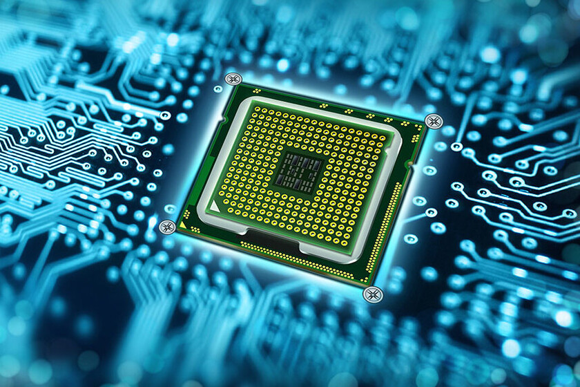

3.1 Chip set.
Un chipset es el conjunto de circuitos integrados diseñados con base en la arquitectura de un
procesador (en algunos casos, diseñados como parte integral de esa arquitectura), permitiendo que
ese tipo de procesadores funcionen en una placa base. Sirven de puente de comunicación con el resto
de componentes de la placa, como son la memoria, las tarjetas de expansión, los puertos USB, ratón,
teclado, etc.
Las placas base modernas suelen incluir dos integrados, denominados puente norte y puente sur, y
suelen ser los circuitos integrados más grandes después de la GPU y el microprocesador. Las últimas
placa base carecen de puente norte, ya que los procesadores de última generación lo llevan
integrado.
Funcionamiento:
El chipset es el que hace posible que la placa base funcione como eje del sistema, dando soporte a
varios componentes e interconectándolos de forma que se comuniquen entre ellos haciendo uso de
diversos buses.
Es uno de los pocos elementos que tiene conexión directa con el procesador, gestiona la mayor parte
de la información que entra y sale por el bus principal del procesador, del sistema de vídeo y
muchas veces de la memoria RAM. En el caso de los computadores PC, es un esquema de arquitectura
abierta que establece modularidad: el chipset debe tener interfaces estándar para los demás
dispositivos.
Esto permite escoger entre varios dispositivos estándar, por ejemplo, en el caso de los buses de
expansión, algunas tarjetas madre pueden tener bus PCI-Express y soportar diversos tipos de tarjetas
de distintos anchos de bus (1x, 8x, 16x).
3.1.1 Unidad de procesamiento.
 La unidad central de procesamiento (siglas en inglés Central Processing Unit) es el hardware dentro de una computadora u otros dispositivos programables. Su trabajo es interpretar las instrucciones de un programa informático mediante la realización de las operaciones básicas aritméticas, lógicas y externas (provenientes de la unidad de entrada/salida). Su diseño y avance ha variado notablemente desde su creación, aumentando su eficiencia y potencia, y reduciendo aspectos como el consumo de energía y el costo. Los componentes de la CPU son: Unidad aritmético lógica (ALU): Realiza operaciones aritméticas y lógicas. Unidad de control (CU): Dirige el tráfico de información entre los registros de la CPU y conecta con la ALU las instrucciones extraídas de la memoria. Registros internos: No accesibles (de instrucción, de bus de datos y bus de dirección) y accesibles de uso específico (contador programa, puntero pila, acumulador, flags, etc.) o de uso general.
3.1.2 Controlador del Bus
 El controlador del bus se encarga de la frecuencia de funcionamiento y las señales de sincronismo, temporización y control. Está ubicado en un chip en la placa base. El bus es la vía a través de la que se van a transmitir y recibir todas las comunicaciones, tanto internas como externas, del sistema informático. El bus es solamente un dispositivo de transferencia de
información entre los componentes conectados a él, no almacena información alguna en ningún momento. Los datos, en forma de señal eléctrica, sólo permanecen en el bus el tiempo que necesitan en recorrer la distancia entre los dos componentes implicados en la transferencia.
El controlador del bus se encarga de la frecuencia de funcionamiento y las señales de sincronismo, temporización y control. Está ubicado en un chip en la placa base. El bus es la vía a través de la que se van a transmitir y recibir todas las comunicaciones, tanto internas como externas, del sistema informático. El bus es solamente un dispositivo de transferencia de
información entre los componentes conectados a él, no almacena información alguna en ningún momento. Los datos, en forma de señal eléctrica, sólo permanecen en el bus el tiempo que necesitan en recorrer la distancia entre los dos componentes implicados en la transferencia.
3.1.3 Puertas de Entrada/Salida
Un puerto de E/S es un enchufe en una
 computadora al que se conecta un cable. El puerto conecta la CPU a un dispositivo
periférico a través de una interfaz de hardware o a la red a través de una interfaz de red. En otras palabras, un puerto de E/S es un punto de conexión que actúa como interfaz entre la computadora y dispositivos externos como mouse, impresora, módem, etc.
computadora al que se conecta un cable. El puerto conecta la CPU a un dispositivo
periférico a través de una interfaz de hardware o a la red a través de una interfaz de red. En otras palabras, un puerto de E/S es un punto de conexión que actúa como interfaz entre la computadora y dispositivos externos como mouse, impresora, módem, etc.
Tipos de Puertos:
- Puerto serial
- Puerto USB
- Puerto PS/2
- Puerto de infrarrojos
- Puerto Bluetooth
- Puerto FireWire
3.1.4 Controlador de Interrupciones
El controlador de interrupciones es un módulo que tiene por función gestionar las interrupciones de entrada/salida para el procesador. Esto ahorra diseñar lógica y añadir patitas al procesador. También proporciona flexibilidad porque permite idealmente, gestionar un número ilimitado señales de interrupción (favoreciendo la expansión del sistema de entrada/salida).

Ciclo de reconocimiento de interrupción
- Tras la activación de una línea IR, el controlador activa la salida INTR señalándole a la CPU la existencia de una interrupción activada.
- Al recibir la señal, el procesador da un pulso en su salida INTA indicando que comienza un ciclo de reconocimiento de interrupción.
- Al recibir el controlador el pulso por su entrada INTA comienza a arbitrar las interrupciones recibidas y selecciona la más prioritaria.
- Se emite un segundo pulso por la línea INTA del procesador (o controlador de bus) que utiliza el controlador para depositar en el bus el vector correspondiente a la interrupción de mayor prioridad.
- El procesador obtiene la dirección de la rutina de interrupción a partir de este dato y salta a ella. Almacena el registro de flags y la dirección de retorno, deshabilita las interrupciones y comienza a ejecutar la rutina.
3.1.5 Controlador de Acceso Directo a Memoria
 ("DMA Controller"), que permite realizar estos intercambios sin apenas intervención del procesador. En los XT estaba integrado en un chip 8237A que proporcionaba 4 canales de 8 bits (puede mover solo 1 Byte cada vez); sus direcciones de puerto son 000–00Fh. Posteriormente en los AT se instalaron dos de estos integrados y las correspondientes líneas auxiliares en el bus de control. En contra de lo que podría parecer, el resultado no fue disponer de 8 canales, porque el segundo controlador se colgó en “Cascada” de la línea 4 del primero. Los canales del
El mecanismo de acceso directo a memoria está controlado por un chip específico, el DMAC
segundo DMAC está asignado a las direcciones 0C0–0DFh y son de 16 bits. Pueden mover 2 Bytes (de posiciones contiguas) cada vez. Cada canal tiene asignada una prioridad para el caso de recibirse simultáneamente varias peticiones (los números más bajos tienen prioridad más alta). Pueden ser utilizados por cualquier dispositivo que los necesite (suponiendo naturalmente que esté diseñado para soportar este modo de operación). Cada sistema los asigna de forma arbitraria, pero hay algunos cuya asignación es estándar.
("DMA Controller"), que permite realizar estos intercambios sin apenas intervención del procesador. En los XT estaba integrado en un chip 8237A que proporcionaba 4 canales de 8 bits (puede mover solo 1 Byte cada vez); sus direcciones de puerto son 000–00Fh. Posteriormente en los AT se instalaron dos de estos integrados y las correspondientes líneas auxiliares en el bus de control. En contra de lo que podría parecer, el resultado no fue disponer de 8 canales, porque el segundo controlador se colgó en “Cascada” de la línea 4 del primero. Los canales del
El mecanismo de acceso directo a memoria está controlado por un chip específico, el DMAC
segundo DMAC está asignado a las direcciones 0C0–0DFh y son de 16 bits. Pueden mover 2 Bytes (de posiciones contiguas) cada vez. Cada canal tiene asignada una prioridad para el caso de recibirse simultáneamente varias peticiones (los números más bajos tienen prioridad más alta). Pueden ser utilizados por cualquier dispositivo que los necesite (suponiendo naturalmente que esté diseñado para soportar este modo de operación). Cada sistema los asigna de forma arbitraria, pero hay algunos cuya asignación es estándar.
3.1.6 Circuitos de Temporización
 El circuito electrónico que más se utiliza tanto en la industria como en circuitería comercial, es el circuito temporizador o de retardo, dentro de la categoría de temporizadores, cabe destacar el más económico y también menos preciso consistente en una resistencia y un condensador, a partir de aquí se puede contar con un sinfín de opciones. Un temporizador básicamente consiste en un elemento que se activa o desactiva después de un tiempo preestablecido. De esta manera podemos determinar el parámetro relacionado con el tiempo que ha de transcurrir para que el circuito susceptible de temporizarse, se detenga o empiece a funcionar o simplemente cierre un contacto o lo abra. Se encuentra en la placa base de la PC y que es capaz de mantener una cuenta de tiempo basada en el reloj de la computadora. Puede usarse para calcular el intervalo entre dos mediciones de tiempo o para generar pausas. Este chip tiene la capacidad de realizar diferentes funciones de conteo. Es útil para medir el tiempo que dura cierto proceso o para mantener actualizadas la hora del día y la fecha si se deja la PC conectada y encendida.
El circuito electrónico que más se utiliza tanto en la industria como en circuitería comercial, es el circuito temporizador o de retardo, dentro de la categoría de temporizadores, cabe destacar el más económico y también menos preciso consistente en una resistencia y un condensador, a partir de aquí se puede contar con un sinfín de opciones. Un temporizador básicamente consiste en un elemento que se activa o desactiva después de un tiempo preestablecido. De esta manera podemos determinar el parámetro relacionado con el tiempo que ha de transcurrir para que el circuito susceptible de temporizarse, se detenga o empiece a funcionar o simplemente cierre un contacto o lo abra. Se encuentra en la placa base de la PC y que es capaz de mantener una cuenta de tiempo basada en el reloj de la computadora. Puede usarse para calcular el intervalo entre dos mediciones de tiempo o para generar pausas. Este chip tiene la capacidad de realizar diferentes funciones de conteo. Es útil para medir el tiempo que dura cierto proceso o para mantener actualizadas la hora del día y la fecha si se deja la PC conectada y encendida.
3.1.7 Circuitos de Control
Es una red secuencial que acepta un código que define la operación que se va a ejecutar y luego prosigue a través de una secuencia de estados, generando una correspondiente secuencia de señales control. Estas señales de control incluyen el control de lectura-escritura y señales de dirección de memoria válida en el bus de control del sistema. Otras señales generadas por el controlador se conectan a la ALU y a los registros internos del procesador para regular el flujo de información en el procesador y desde los buses de dirección y de datos del sistema.
3.1.8 Controladores de Video
La tarjeta de video, (también llamada controlador de video), es un componente electrónico requerido para generar una señal de video que se manda a una pantalla de video por medio de un cable. La tarjeta de video se encuentra normalmente en la placa de sistema de la computadora o en una placa de expansión. La tarjeta gráfica reúne toda la información que debe visualizarse en pantalla y actúa como interfaz entre el procesador y el monitor; la información es enviada a éste por la placa luego de haberla recibido a través del sistema de buses. Una tarjeta gráfica se compone, básicamente, de un controlador de video, de la memoria de pantalla o RAM video, y el generador de caracteres, y en la actualidad también poseen un acelerador de gráficos. El controlador de video va leyendo a intervalos la información almacenada en la RAM video y la transfiere al monitor en forma de señal de video; el número de veces por segundo que el contenido de la RAM video es leído y transmitido al monitor en forma de señal de video se conoce como frecuencia de refresco de la pantalla.
3.2 Aplicaciones
En informática, un periférico de entrada/salida o E/S (en inglés: input/output o I/O) es aquel tipo de dispositivo periférico de un computador capaz de interactuar con los elementos externos a ese sistema de forma bidireccional, es decir, que permite tanto que sea ingresada información desde un sistema externo, como emitir información a partir de ese sistema. Los Dispositivos Periféricos de entrada son todos aquellos dispositivos que permiten introducir datos o información en una computadora para que esta los procese u ordene.
Funciones:
Un periférico de E/S es el que se utiliza para ingresar (E) datos a la computadora, y luego de ser procesados por la unidad central de procesamiento (CPU), genera la salida (S) de información. Su función es leer o grabar, permanente o virtualmente, todo aquello que se haga con la computadora, para que pueda ser utilizado por los usuarios u otros sistemas.
Tipos:
- Dispositivos o periféricos de comunicación entre computadoras
- Dispositivos de almacenamiento de datos
3.2.1 Entrada/Salida
Conforme la tecnología avanza, más datos se van generando, por lo que es necesario contar con un almacenamiento eficiente para poder guardar toda esa información y acceder a ellos. El almacenamiento de datos ha cambiado mucho, desde los sistemas de disco, que muy probablemente se sigan utilizando, pero de una forma más digital: hoy se encuentran conectados a una red y son definidos por un software.
Almacenamiento en Sistemas Informáticos:
Un dispositivo de almacenamiento es un hardware que se utiliza principalmente para almacenar datos. Cada computadora de escritorio, computadora portátil, tablet y smartphone tendrán algún tipo de dispositivo de almacenamiento en su interior y también puedes obtener unidades de almacenamiento externo independientes que se pueden utilizar en varios dispositivos.
Tipos de Almacenamiento:
- Unidades de discos duros (HDD)
- Discos de estado sólido (SSD)
3.3 Ambientes de Servicio
El negocio de proveer servicios de datos es mucho más complejo que la forma en la que se dan los tradicionales servicios, los primeros requieren de nuevos conocimientos y modelos de negocio, que con frecuencia se termina involucrando o necesitando la colaboración de terceras empresas. Por lo que se hace necesario que los operadores tradicionales transformen su negocio para ofrecer los servicios de datos con los niveles de servicio que el mercado exige.
3.3.1 Negocios
Definitivamente, la tecnología en general ha sido la causa principal y la acción más directa para la transformación del trabajo de las organizaciones en la posguerra del siglo XX. Tanto los bienes de capital "duros" (computadores, teléfonos, videos, facsímiles, grabadoras, etc.), como los programas y sistemas de información y comunicación en general, han incrementado enormemente la productividad y eficiencia de las organizaciones.
3.3.2 Industria
La industrialización de los servicios de tecnología de información va a redefinir el mercado en términos de como las organizaciones evalúan, compran y seleccionan los servicios y como los vendedores desarrollan y establecen precios de los servicios.
3.3.3 Comercio Electrónico
El desarrollo de estas tecnologías y de las telecomunicaciones ha hecho que los intercambios de datos crezcan a niveles extraordinarios, simplificándose cada vez más y creando nuevas formas de comercio, y en este marco se desarrolla el Comercio Electrónico. Se considera “Comercio Electrónico” al conjunto de aquellas transacciones comerciales y financieras realizadas a través del procesamiento y la transmisión de información, incluyendo texto, sonido e imagen.